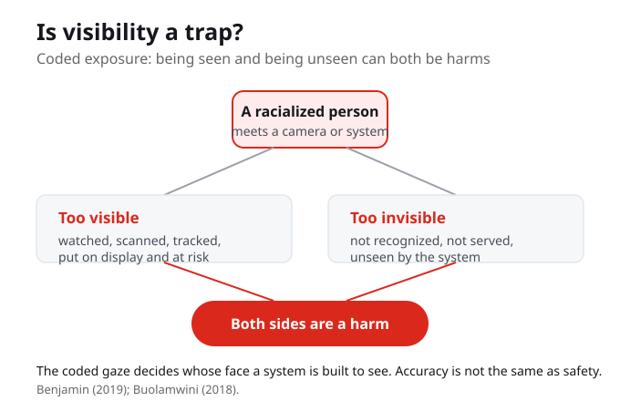
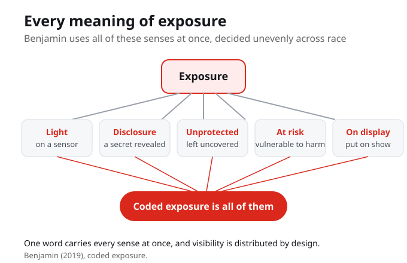
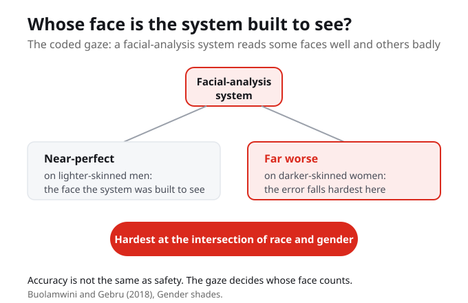

1. Coded exposure is best described as:
2. The double bind of coded exposure is that racialized people are made:
3. The phrase the coded gaze comes from:
4. The coded gaze names:
5. Benjamin plays on every meaning of the word exposure, including:
6. In the 2018 Gender Shades study, facial-analysis systems were:
7. Benjamin frames visibility as a trap because:
Week 5 continues Part II, where we dissect the New Jim Code dimension by dimension. This week's dimension is coded exposure, the politics of visibility, where racialized people are made both too visible and too invisible by technical systems.
By the end of this week you should be able to

Coded exposure is about visibility itself, and it puts racialized people in a bind. On one side they are made too visible: watched, scanned, and tracked. On the other side they are made invisible: not recognized and not served. Being seen is a harm and being unseen is a harm, and the coded gaze decides whose face a system is built to see. Accuracy is not the same as safety.
Coded exposure is about visibility itself, and it puts racialized people in a bind. Being made too visible is a harm, and being made invisible is a harm, and both can happen at the same time.
Is visibility a trap? When is being seen by a system a protection, and when is it a risk?
Coded exposure is about visibility itself, and it puts racialized people in a bind. On one side they are made too visible: watched, scanned, tracked. On the other side they are made invisible: not recognized, not served. Being seen is a harm, and being unseen is a harm. That double bind is the trap.
On one side, racialized people are made too visible: watched, scanned, and tracked. On the other side, they are made invisible: not recognized and not served. That double bind is the trap.

Benjamin plays on every meaning of the word exposure: light on a sensor, a secret disclosed, being unprotected, being at risk, being put on display. Coded exposure is all of these, decided unevenly across race.
Benjamin uses every sense of the word exposure at once: light on a sensor, a secret disclosed, being unprotected, being at risk, being put on display. Coded exposure is all of these, decided unevenly across race.
What are the different meanings of exposure, and how does Benjamin use all of them at once?

There is a line that says it: I think my Blackness is interfering with the computer's ability to follow me. Joy Buolamwini calls this the coded gaze, whose face a system is built to see. In 2018 she and Timnit Gebru measured it: facial-analysis systems were near-perfect on lighter-skinned men and far worse on darker-skinned women. The error fell hardest at the intersection of race and gender.
Joy Buolamwini calls this the coded gaze: whose face a system is built to see. In 2018 she and Timnit Gebru measured it, and facial-analysis systems were near-perfect on lighter-skinned men and far worse on darker-skinned women. The error fell hardest at the intersection of race and gender.
So when you meet a camera or a recognition system, ask: who does it see too well and put at risk, who does it fail to see, and whose images trained it. Accuracy is not the same as safety.
When you meet a camera or a recognition system, ask who it sees too well and puts at risk, who it fails to see, and whose images trained it. Accuracy is not the same as safety.
Who is made hyper-visible by a system you use, and who is made invisible by it?
Coded exposure is Benjamin's third dimension of the New Jim Code: visibility itself is engineered unevenly across race. Some people are made hyper-visible to systems while others are made invisible, and that uneven distribution is designed, not accidental.
Being too visible is a harm: you are watched, scanned, and tracked. Being invisible is also a harm: you are not recognized and not served. For racialized communities both can happen at the same time, which is why Benjamin calls visibility a trap rather than a simple good.
The coded gaze, Joy Buolamwini's term, names whose face a system is built to see. The webcam user who said my Blackness is interfering with the computer's ability to follow me was describing it. In 2018 Buolamwini and Gebru measured the gap, near-perfect on lighter-skinned men and far worse on darker-skinned women.
A system that sees you well can still put you at risk by watching, scanning, and exposing you. High accuracy does not guarantee safety, so the right question is not only how often a system errs but who it sees too well, who it fails to see, and whose images trained it.
Earlier in Part II we dissected the New Jim Code dimension by dimension, including default discrimination, where technology treats whiteness as the baseline and bias operates through proxies without ever naming race.
We turn to coded exposure, the politics of visibility. Benjamin uses every meaning of the word exposure at once, and Buolamwini's coded gaze, measured in the 2018 Gender Shades study, shows whose face a system is built to see. The lesson is that accuracy is not the same as safety.
From here the course moves toward the Canadian cases, where these same patterns of designed visibility and uneven recognition appear in real systems and the question becomes what a fairer design would actually change.
Two harms sit on top of each other this week: a camera that watches you too closely, and a camera that cannot see you at all. If being seen and being unseen can both be turned against you, what would safety even look like, and who gets to decide when you are visible?
Your notes save automatically on this device and stay after you close your browser or shut down. Use Save my notes (below) to download a copy you can keep or open on another device.
A recognition system fails to detect a darker-skinned user's face. According to this week, this is a harm because:
The webcam user who said my Blackness is interfering with the computer's ability to follow me was describing:
Buolamwini and Gebru's 2018 measurement showed the error fell hardest:
This week's caution that accuracy is not the same as safety means:
Race After Technology, the chapter Is Visibility a Trap? This is Benjamin's third dimension. Pay attention to how she uses every meaning of the word exposure at once: light on a sensor, a secret disclosed, being unprotected, being at risk, being put on display.
Buolamwini and Gebru (2018), Gender shades. This is the evidence for the coded gaze: facial-analysis systems were near-perfect on lighter-skinned men and far worse on darker-skinned women, so the error fell hardest at the intersection of race and gender.
Identify a real example of coded exposure, a camera or system that reads some people well and others badly, and add it to your Living Cartography. Note who is made hyper-visible, who is made invisible, and whose images likely trained it.
Benjamin, R. (2019). Race after technology: Abolitionist tools for the New Jim Code. Polity Press. (Coded exposure, the third dimension; the chapter Is Visibility a Trap?)
Buolamwini, J., and Gebru, T. (2018). Gender shades: Intersectional accuracy disparities in commercial gender classification. Proceedings of Machine Learning Research, 81, 1-15.